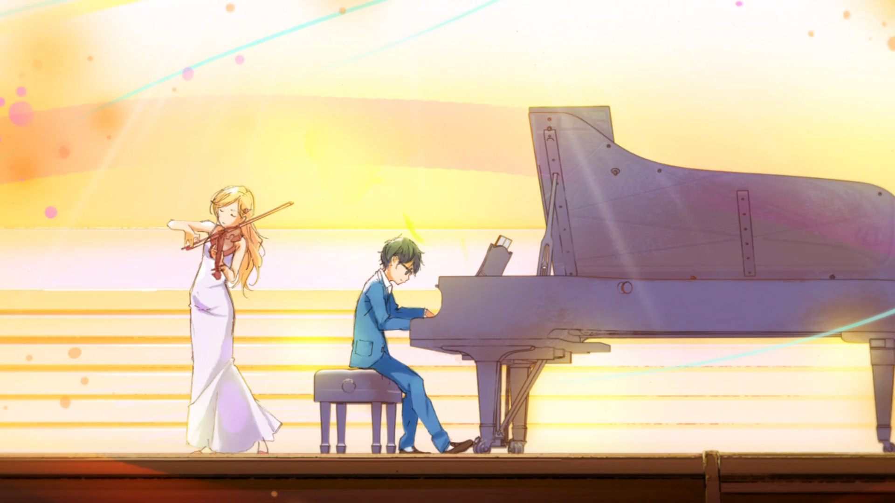
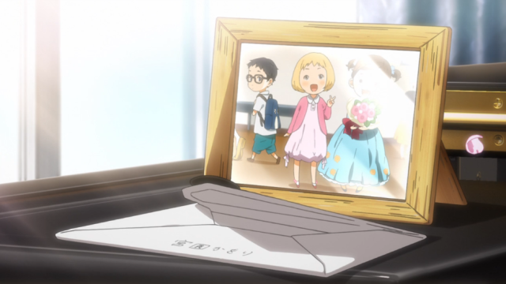
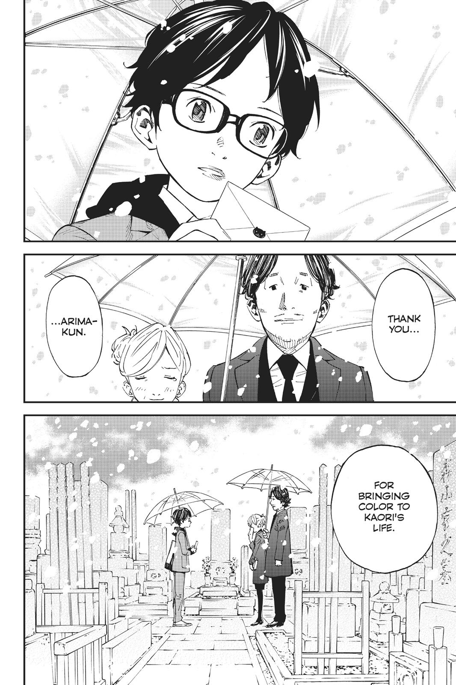

Your Lie in April (Japanese: 四月は君の嘘, Hepburn: Shigatsu wa Kimi no Uso) is a 2016 Japanese youth music romance film directed by Takehiko Shinjō, written by Yukari Tatsui, starring Suzu Hirose and Kento Yamazaki and based on the manga series of the same name written and illustrated by Naoshi Arakawa.
WARNING: SPOILERS
Story
The story follows Kousei Arima, a piano prodigy who loses the ability to hear his own playing after his mother's death, leaving him emotionally paralyzed. His life changes when he meets Kaori Miyazono, a spirited violinist with a vibrant approach to music and life. Kaori’s free-spirited playing style contrasts sharply with Kousei’s mechanical precision, pushing him to rediscover his passion for music. However, underlying Kaori's cheerful exterior is a heartbreaking secret that adds depth to the narrative.
Music
Music is at the heart of Your Lie in April. The classical pieces, including works by Beethoven and Chopin, are skillfully integrated into the narrative, enhancing the emotional impact of each scene. Kaori's violin performances and Kousei’s piano recitals are more than just music—they're expressions of their innermost feelings.

Art and Animation
The animation is breathtaking, with vibrant colors and fluid movements that bring performances to life. The depiction of light and seasons mirrors the emotional tone of the story, creating a visual language that complements the plot.
Themes
At its core, Your Lie in April is a story about overcoming trauma and finding beauty in fleeting moments. It delicately handles themes of grief, personal growth, and the bittersweet nature of life, leaving viewers both heartbroken and inspired.
Critique
While the series is emotionally impactful, some may find it overly dramatic at times, with certain scenes feeling melodramatic. Additionally, the pacing occasionally slows, but these moments are often used to deepen character development.
Conclusion
Your Lie in April is a masterpiece that will stay with you long after the final notes fade. It’s an emotional rollercoaster that celebrates the transformative power of music and the importance of living life to its fullest. Whether you’re a fan of music, drama, or romance, this anime is a must-watch.

